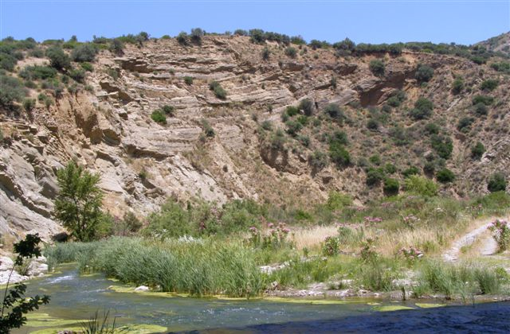

Stretta di Scillato

ITALIANO - Luogo in cui le acque del Fiume Imera Settentrionale incontrano i sedimenti conglomeratici poligenici rossastri della “Formazione Terravecchia” (di età miocenica), formando una “Forra” nell’azione erosiva di approfondimento. Nell’ansa fluviale di attraversamento della “stretta” vengono interessati anche i depositi calcarenitico‐sabbiosi della citata formazione, in cui è possibile riscontrare antichi piani fluviali e strutture sedimentarie a “Ripple Marks”.
ENGLISH - Place where the waters of the North Imera River meet the reddish poligenical conglomeratic sediments of the “Terravecchia Formation” (of Miocene age), forming a “Forra” in the erosive action of deepening. In the river meander crossing the “strait” the sandy calcarenitic deposits of the aforementioned formation are also affected, where it is possible to find ancient river plans and sedimentary structures with “Ripple Marks”.